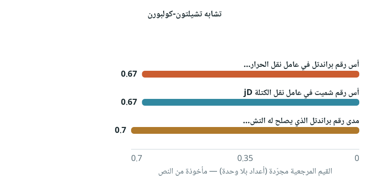

تشابه تشيلتون-كولبورن
Chilton-Colburn Analogy
تشابه تشيلتون-كولبورن يجعل معامل نقل الكتلة ومعامل نقل الحرارة ومعامل الاحتكاك دالة واحدة في رقم رينولدز، فيُستخرج معامل نقل الكتلة من قياسات الحرارة أو الضغط.
تشابه تشيلتون-كولبورن قاعدة تربط نقل الكتلة بنقل الحرارة وبالاحتكاك في الجريان المضطرب. يعرّف تريبال عامل نقل الحرارة jH بأنه حاصل ضرب رقم ستانتون الحراري في رقم براندتل مرفوعًا للأس ثلثين، وعامل نقل الكتلة jD بأنه حاصل ضرب رقم ستانتون الكتلي في رقم شميت مرفوعًا للأس ثلثين، ويقرر أن كليهما دالة واحدة في رقم رينولدز. ويوضح المصدر نفسه أن هذا التشابه يوافق البيانات التجريبية موافقة جيدة ما دام رقم شميت غير كبير. أما كيرن فيصوغ الأمر في صورة تصميمية: من امتداد تشابه رينولدز إلى التقطير، حيث التشابه بين نقل الكتلة ونقل الحرارة قريب جدًا، هناك سبب وجيه للاعتقاد بأن jD وjH هما الدالة نفسها في رقم رينولدز وأنهما متساويان. والقيمة العملية للقاعدة أن معامل نقل الكتلة المكلف قياسه يُستخرج من معامل نقل حرارة أو احتكاك مقيس في الجهاز نفسه، بشرط بقاء الهندسة والجريان كما هما.
كيف تعمل الظاهرة؟
أساس التشابه أن الاضطراب ينقل الزخم والحرارة والكتلة بالآلية نفسها: كتل هوائية دوّارة تحمل معها فرق السرعة وفرق الحرارة وفرق التركيز. فإذا كانت الهندسة ورقم رينولدز واحدًا، كانت مقاومة النقل الثلاثة متناسبة، واختلفت فقط في مقدار الانتشار الجزيئي الذي يسبق الاضطراب. ويعالج كولبورن هذا الاختلاف بضرب رقم ستانتون في رقم براندتل أو شميت مرفوعًا للأس ثلثين، فيُختزل الفرق الجزيئي في عامل واحد ويبقى رقم رينولدز المتغير الحاكم.
العلاقة بالأرقام
يعرّف تريبال jH = St_h · Pr^(2/3) في المعادلة 3.56، و jD = St_m · Sc^(2/3) في المعادلة 3.57، ويقرر أن كليهما دالة واحدة في رقم رينولدز. وفي المعادلة 3.61 يُكتب معامل الاحتكاك في الأنابيب الملساء f/2 = 0.023 Re^-0.2، وبالتعويض في معادلة شيروود 3.60 يخرج jD مساويًا f/2 في المعادلة 3.62. ويذكر أن المعادلة 3.60 الحراريّة مُرضية في مدى رقم براندتل 0.7 إلى 120، وأن مدى رقم رينولدز 5000 إلى 200000.
مفاهيم متقاربة
التمييز الحاسم بين تشابه رينولدز وتشابه كولبورن: رينولدز يكتب St = f/2 ويصلح حين يكون رقم براندتل قريبًا من الواحد، فيفشل مع السوائل ذات رقم براندتل الكبير. وتشابه كولبورن يضيف الأس ثلثين على رقم براندتل فيمتد إلى تلك السوائل، ويصفه تريبال بأنه تعديل تجريبي بسيط يمثل البيانات جيدًا حتى عند رقم براندتل كبير. والتمييز الثاني أن jD و jH عاملان مختلفان في تعريفهما وإن تساويا في القيمة: أحدهما يضرب رقم ستانتون الحراري في رقم براندتل، والآخر يضرب رقم ستانتون الكتلي في رقم شميت.
حدود التطبيق
حدود التشابه ثلاثة. الأول أنه يصلح للجريان المضطرب في الهندسة التي قيس فيها، ولا ينتقل إلى هندسة أخرى بلا تحقق. والثاني أن تريبال يحذر من أن jD نجح في الجريان المضطرب في الأنابيب حتى صار كثير من البيانات ذات مدى رقم شميت الضيق يُصاغ به دون إثبات صحة الأس ثلثين للحالة، فالتوسيع إلى أرقام شميت بعيدة عن مدى التجربة يحتاج تحفظًا. والثالث أن التشابه يوافق البيانات ما دام رقم شميت غير كبير، ويضعف حين يكبر.

| الكمية | القيمة | المصدر |
|---|---|---|
| أس رقم براندتل في عامل نقل الحرارة jH | 2/3 — | [1] |
| أس رقم شميت في عامل نقل الكتلة jD | 2/3 — | [1] |
| مدى رقم براندتل الذي يصلح له التشابه الحراري المقابل | 0.7–120 — | [1] |
| مدى رقم رينولدز في معادلة شيروود المكافئة | 5000–200000 — | [1] |
| شرط تساوي jD و jH في الصيغة التصميمية | jD = jH — | [2] |
المصادر
- 1 Mass-Transfer Operations, 3rd ed. — McGraw-Hill (1980). · اطُّلع عليه 2026-11-28
- 2 Process Heat Transfer — McGraw-Hill (1950). · اطُّلع عليه 2026-11-28
- 3 Mass Transfer (Absorption) Coefficients Prediction from Data on Heat Transfer and Fluid Friction — American Chemical Society (Industrial & Engineering Chemistry) (1934). doi.org/10.1021/ie50299a012 · اطُّلع عليه 2026-11-28
استشهد بهذا المصطلح
الصيغتان مبنيتان من بيانات الصفحة نفسها: العنوان والتاريخ ورابط النسخة المنشورة.
تشابه تشيلتون-كولبورن — Chilton-Colburn Analogy. (2026). ديوان المعرفة — انفراد. https://infiradev.com/diwan/terms/term-chilton-colburn-analogy.html
@misc{term-chilton-colburn-analogy2026,
title = {تشابه تشيلتون-كولبورن},
titleaddon = {Chilton-Colburn Analogy},
howpublished = {{ديوان المعرفة — انفراد} — مرجع علمي عربي},
year = {2026},
url = {https://infiradev.com/diwan/terms/term-chilton-colburn-analogy.html},
urldate = {2026-11-28},
note = {مراجعة علمية: Abdullah Al-Huwaidi}
}
راجعه: Abdullah Al-Huwaidi · 2026-11-28 · آخر تحديث 2026-11-28